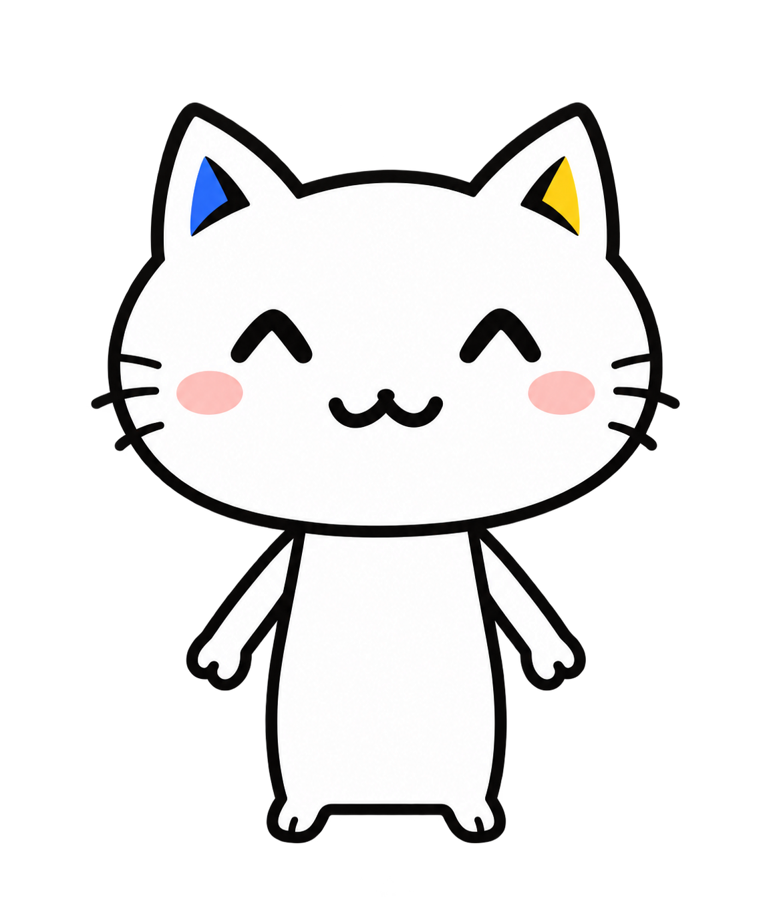
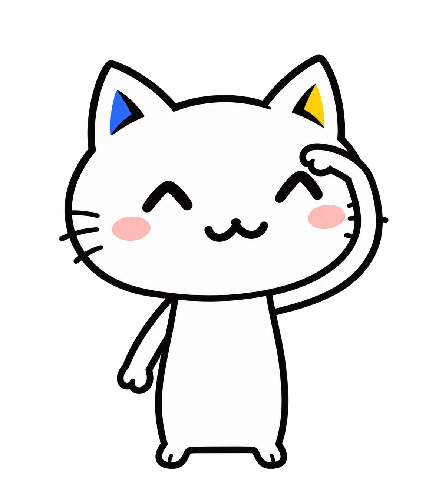
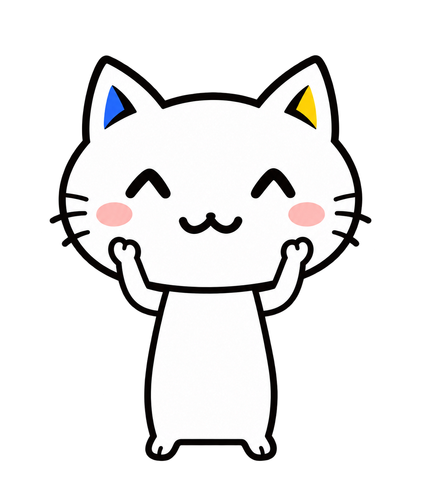
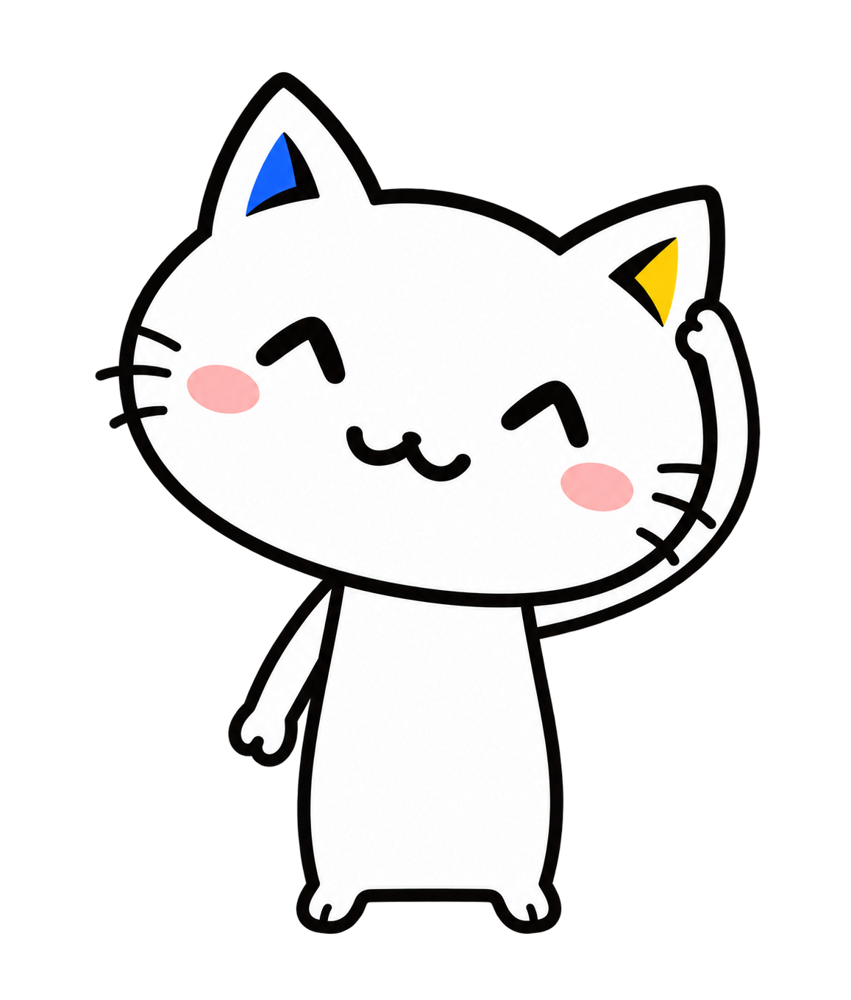
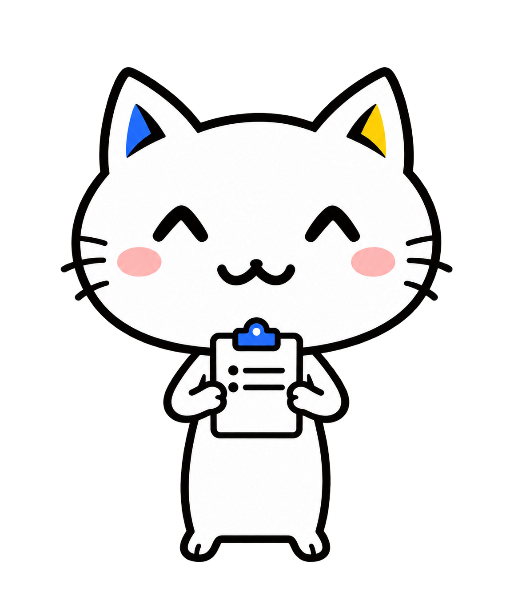
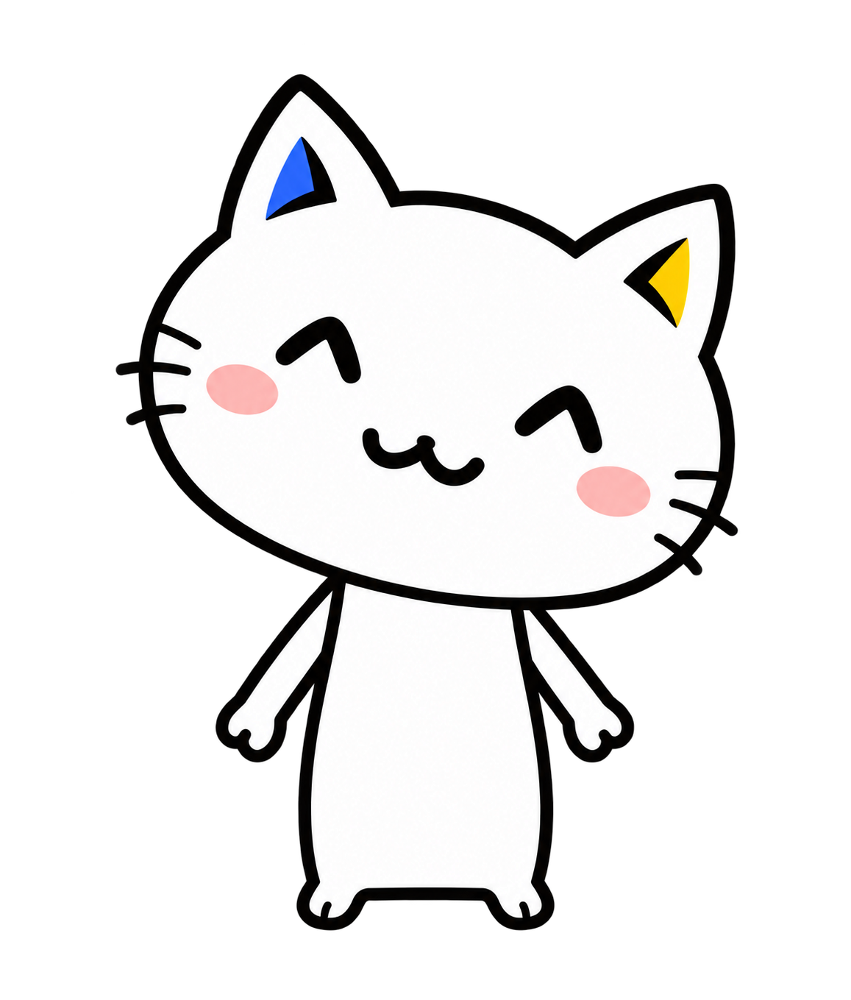

Luminous · 正式原型与七个小动作
按正式原型重新制作 · 小手、小脚、窄身体 · 待图片确认后再嵌入页面

正式原型 · 对照
已确认的角色外形。
头部与身体比例以此为准。

发现社区 · 张望
页头右侧。
与创建按钮留开距离。

社区详情 · 托腮
右侧「社区约定」卡片内。
手机端随卡片排到讨论下方。
帖子详情 · 看书
正文末尾右侧。
互动按钮之前。
我的收藏 · 抱星星
页头右侧。
不占用帖子列表的位置。

个人主页 · 整理耳朵
资料卡底部右侧。
统计旁边。

管理后台 · 拿记录板
页头右侧。
小尺寸，不进入用户表格。

404 页面 · 歪头
错误提示上方居中。
尺寸稍大一些。